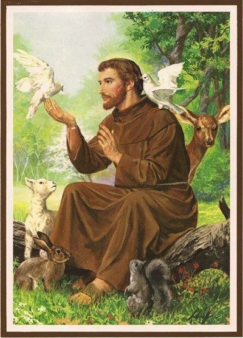
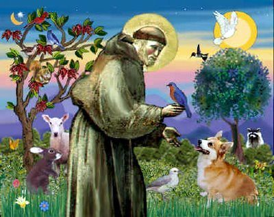

São Francisco de Assis
Aqui vocês vão conhecer a história de um santo muito amado. E no final, prepare-se para descobrir algumas curiosidades especiais sobre ele hehe
História de São Francisco
São Francisco de Assis nasceu em Assis, Itália, em 1182. Era filho de Pedro Bernardone, um rico comerciante, e Pia, de família nobre da Provença. Na juventude, Francisco era muito rico e esbanjava dinheiro com ostentações. Porém, os negócios de seu pai não lhe despertaram interesse, muito menos os estudos. O que ele queria mesmo era se divertir. Porém, São Boaventura, seu contemporâneo, escreveu sobre ele: “Mas, com o auxílio divino, jamais se deixou levar pelo ardor das paixões que dominavam os jovens de sua companhia”.
Ambicioso, desejava ser cavaleiro e conquistar honra nas batalhas. Contudo, após uma longa doença e experiências espirituais profundas, Francisco começou a repensar o sentido da vida. Um dia, ao rezar na igreja de São Damião, ouviu a voz de Cristo lhe dizendo: "Francisco, reconstrói a minha Igreja".
Num dia simples, mas muito especial, num momento em que Francisco rezava sozinho na Igreja de São Damião, em Assis, ele sentiu que o crucifixo falava com ele, repetindo por três vezes a frase que ficou famosa: “Francisco, repara minha casa, pois olhas que está em ruínas”. O santo vendeu tudo o que tinha e levou o dinheiro ao padre da Igreja de São Damião, e pediu permissão para viver com ele. Francisco tinha vinte e cinco anos. Pedro Bernardone, ao saber o que seu filho tinha feito, foi buscá-lo indignado, levou-o para casa, bateu nele e acorrentou-o pelos pés. A mãe, porém, o libertou na ausência do marido, e o jovem retornou a São Damião. Seu pai foi de novo buscá-lo. Mandou que ele voltasse para casa ou que renunciasse à sua herança. Francisco então renunciou a toda a herança e disse: “As roupas que levo pertencem também a meu pai, tenho que devolvê-las”. Em seguida se desnudou e entregou suas roupas a seu pai, dizendo-lhe: “Até agora tu tem sido meu pai na terra, mas agora poderei dizer: ‘Pai nosso, que estais nos céus”.
Vídeo sobre São Francisco
Curiosidades sobre São Francisco
- É conhecido como o protetor dos animais e da natureza.
- Fundou a Ordem dos Franciscanos.
-
Chamava o Sol e a Lua de irmãos.
- Recebeu os estigmas (as marcas da Paixão de Cristo).
São Francisco de Assis, um exemplo de vida
São Francisco de Assis manifestava seu amor a Deus por uma alegria imensa, que se expressava muitas vezes em cânticos ardorosos. A quem lhe perguntava qual a razão de tal alegria, respondia que “ela deriva da pureza do coração e da constância na oração”.
Oração a São Francisco de Assis
Senhor, fazei-me instrumento de vossa paz.
Onde houver ódio, que eu leve o amor;
Onde houver ofensa, que eu leve o perdão;
Onde houver discórdia, que eu leve a união;
Onde houver dúvida, que eu leve a fé;
Onde houver erro, que eu leve a verdade;
Onde houver desespero, que eu leve a esperança;
Onde houver tristeza, que eu leve a alegria;
Onde houver trevas, que eu leve a luz.
Ó Mestre, fazei que eu procure mais
Consolar, que ser consolado;
Compreender, que ser compreendido;
Amar, que ser amado.
Pois, é dando que se recebe,
É perdoando que se é perdoado,
E é morrendo que se vive para a vida eterna.